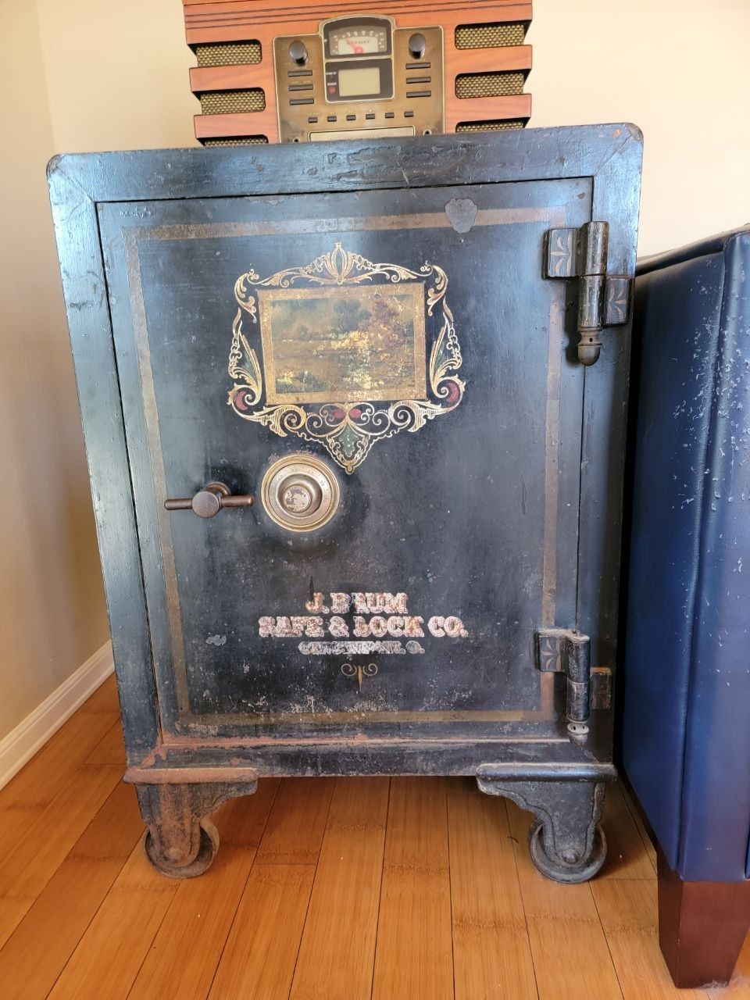
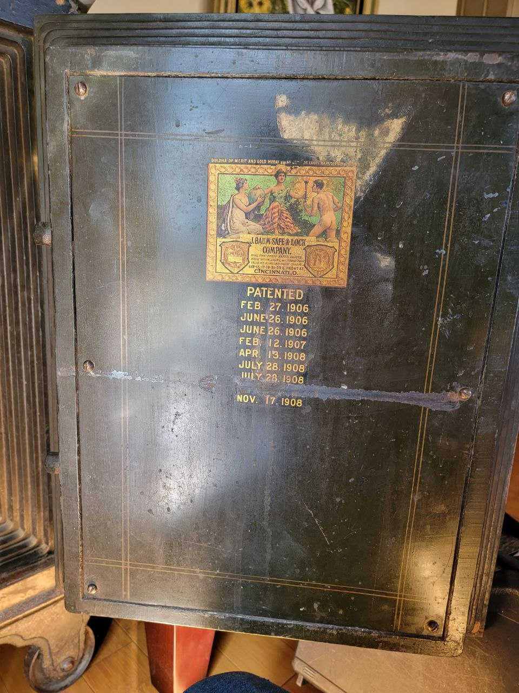
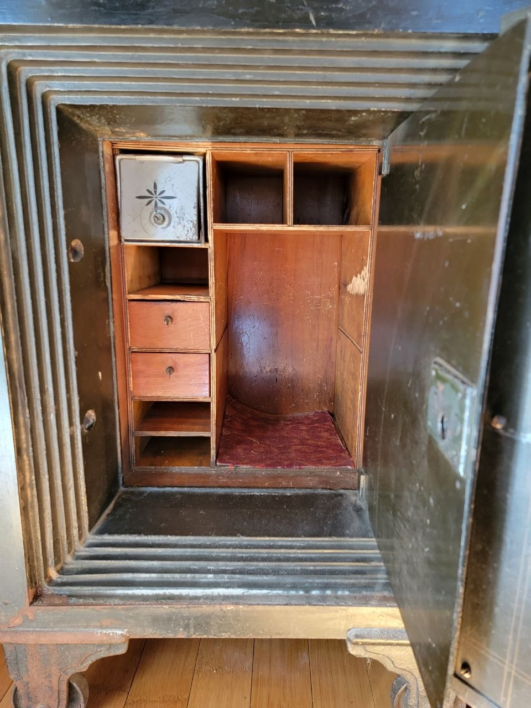

From the Scrapyard to a Family Heirloom — Saving a Macneale & Urban Antique Safe
Not every old safe is a candidate for the scrap pile. Some deserve to be saved.
This Macneale & Urban safe — Chicago-made, early 1900s — came to me as a lockout job. Open it, set a new combination, send it home. But when I looked at it, I saw something worth more than just a quick fix.



Macneale & Urban was a Chicago safe company from the late 1800s into the early 1900s. This particular safe uses a lettered dial — a distinct feature that sets it apart from most safes of the era. The handle hardware appears to be from Halls or HHM, common parts shared among builders of the time. Even Macneale Urban themselves used others' parts, with the lettered dial being the unique signature of this piece.
This safe is beautiful. It has character, history, and craftsmanship you just don't see in modern safes. Heavy steel, mechanical works that were built to last, and a patina that tells a story.
I opened it, serviced the lock, and set a new combination. Now it can be used or handed down — instead of being junked.
Got an old safe? Let's see what it is.
GSA Certified • Preferred Technician for Liberty, Fort Knox, Stealth, Superior & National • CA LCO 4160
Pricing at frantzlocksmithservice.com/pricing